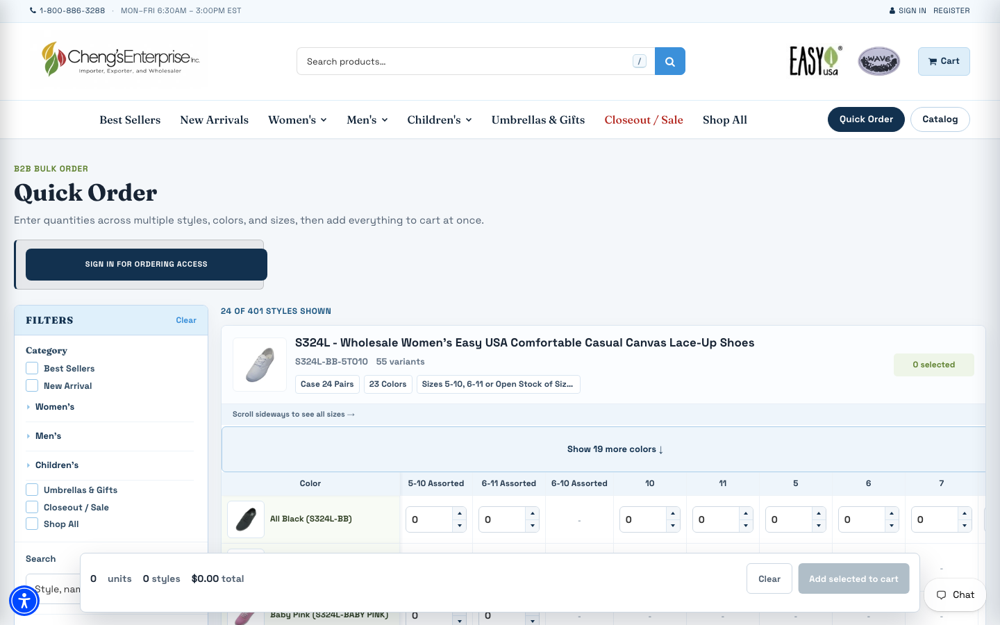

Building a foundation
The Shopify migration was part of a broader effort to update how the business works. The store needed to support wholesale buying, but it also needed reliable product information and account workflows that fit day-to-day operations. Working on those pieces together gave us a more useful starting point for future improvements.
Moving the store to Shopify
A lot of the work was behind the storefront. I consolidated products into color and size variants, preserved existing SKUs, recovered missing information, and corrected collection assignments. The migration included 52,547 customer records.
Building for wholesale orders
Customers needed to understand case quantities and per-pair pricing, choose variants, and use payment and freight options that matched how they did business with us. I worked on navigation, product and collection sections, filters, mobile layouts, accessibility, and a Quick Order page.
Changes after launch
We restored account-required wholesale pricing after reseller feedback. I also worked on access issues for verified customers and adjusted checkout so orders under 150 lb would no longer see a freight-quote option that was causing confusion.
Building with AI
AI was a substantial part of how I approached this work. It helped me take on more of the building directly and work through technical areas I was still learning. My experience with customers and operations helped me work out what the store needed to support.
Groundwork for what comes next
The Shopify storefront launched in August 2026. Work continued through catalog corrections, checkout improvements, and the Quick Order page. Alongside the store, I worked on connecting customer accounts and making product data easier to use. Modernization is still ongoing; these changes give us a foundation for further improvements to ordering, internal tools, and reporting.
Turning loose stock into wholesale cases
As product owner and designer, I worked with Claude Code to build Case Assortment Studio, an internal Shopify app that compares repacking plans, checks inventory counts, and produces warehouse instructions.
Tools for sales and operations
I built an AI sales research and outreach system, with scheduled buyer research, email workflows, and a dashboard. I also built an automated sales intelligence dashboard that reconciles company and online revenue, compares Shopify with the former OpenCart store, and refreshes each weekday with AI-generated summaries.
A separate dropshipping workflow is in development, with full-case ordering, customer shipping choices, and instructions for staff. The checkout and fulfillment implementation remains in testing.
AI sales research and outreach →
Automated sales intelligence →
Dropshipping workflow →
A new way to present the catalog
I led The Boutique Edit editorial project, combining creative direction, product-accurate AI imagery, a reusable Shopify lookbook template, and search strategy to reach independent boutique owners.
The Boutique Edit case study →
Running marketing and merchandising
Alongside the building work, I run marketing, merchandising, and creative for Easy USA. I manage and optimize Google Search and Shopping campaigns myself, connecting that work with the products we feature and the way they are presented on the store.
Developing more ways to sell
I’m working to expand our catalog’s reach through Faire, Shop, and Shopify Collective. This is ongoing channel-development work, alongside improvements to how customers order directly from Easy USA.
Supporting the wider business
I also help navigate the IEEPA tariff refund process, organizing entry documentation, reconciling records, and coordinating follow-up with the customs broker.
Related parts of the work
Wholesale accounts and internal tools →
Working with legacy product data →

